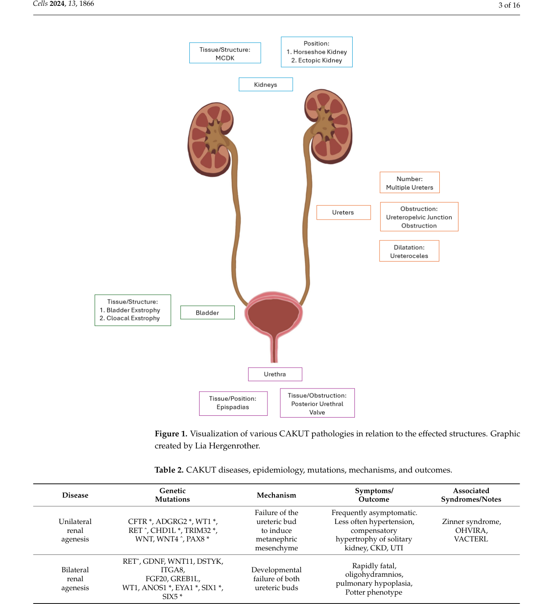

Renal agenesis is a congenital anomaly of the kidney and urinary tract (CAKUT) defined by complete failure of development of one (unilateral) or both (bilateral) kidneys, accompanied by absence of the corresponding ureter(s). It arises from failed reciprocal induction between the ureteric bud and the metanephric mesenchyme during the fifth week of human gestation, most often from defective RET-GDNF, PAX2, GREB1L, ITGA8, or FGF20 signaling. Unilateral renal agenesis is frequently asymptomatic with compensatory hypertrophy of the solitary kidney, whereas bilateral renal agenesis abolishes fetal urine output, producing severe oligohydramnios and the deformation cascade of Potter sequence (pulmonary hypoplasia, characteristic facies, and limb contractures) that is almost uniformly lethal at or shortly after birth.
Ask a research question about Renal Agenesis. OpenScientist will conduct autonomous deep research using the Disorder Mechanisms Knowledge Base and PubMed literature (typically 10-30 minutes).
Do not include personal health information in your question. Questions and results are cached in your browser's local storage.
name: Renal Agenesis
creation_date: "2026-06-08T00:00:00Z"
description: >-
Renal agenesis is a congenital anomaly of the kidney and urinary tract (CAKUT)
defined by complete failure of development of one (unilateral) or both
(bilateral) kidneys, accompanied by absence of the corresponding ureter(s). It
arises from failed reciprocal induction between the ureteric bud and the
metanephric mesenchyme during the fifth week of human gestation, most often
from defective RET-GDNF, PAX2, GREB1L, ITGA8, or FGF20 signaling. Unilateral
renal agenesis is frequently asymptomatic with compensatory hypertrophy of the
solitary kidney, whereas bilateral renal agenesis abolishes fetal urine output,
producing severe oligohydramnios and the deformation cascade of Potter sequence
(pulmonary hypoplasia, characteristic facies, and limb contractures) that is
almost uniformly lethal at or shortly after birth.
category: Congenital
disease_term:
preferred_term: renal agenesis
term:
id: MONDO:0018470
label: renal agenesis
parents:
- Congenital anomaly of the kidney and urinary tract
synonyms:
- Renal aplasia
- Kidney agenesis
- Absent kidney
has_subtypes:
- name: Unilateral
display_name: Unilateral Renal Agenesis (URA)
description: >-
Congenital absence of a single kidney with a normal contralateral kidney.
Frequently asymptomatic and detected incidentally; the solitary kidney
undergoes compensatory hypertrophy. Associated with increased lifetime risk
of hypertension, proteinuria, and chronic kidney disease, and with
ipsilateral genital tract anomalies.
- name: Bilateral
display_name: Bilateral Renal Agenesis (Potter Sequence)
description: >-
Congenital absence of both kidneys, abolishing fetal urine production. The
resulting severe oligohydramnios causes the Potter sequence of pulmonary
hypoplasia, Potter facies, and limb deformation, and is almost uniformly
lethal in the perinatal period.
- name: Syndromic
display_name: Syndromic / Gene-linked Renal Agenesis
description: >-
Renal agenesis occurring as part of a monogenic syndrome or attributable to
a defined developmental gene, including GREB1L-, RET-, PAX2-, ITGA8-, and
FGF20-related CAKUT, as well as renal coloboma syndrome and branchio-oto-renal
spectrum disorders.
pathophysiology:
- name: Failed ureteric bud outgrowth and metanephric induction
description: >-
Renal agenesis originates from failure of the reciprocal inductive interaction
between the ureteric bud and the metanephric mesenchyme. GDNF secreted by the
metanephric mesenchyme signals through the RET receptor tyrosine kinase on the
ureteric bud to drive bud outgrowth and branching; loss of GDNF-RET signaling,
or of upstream regulators such as PAX2, GREB1L, ITGA8, and FGF20, prevents bud
outgrowth or invasion of the mesenchyme, so the metanephros never forms.
cell_types:
- preferred_term: ureteric bud cell
term:
id: CL:4030066
label: ureteric bud cell
biological_processes:
- preferred_term: ureteric bud development
modifier: ABSENT
term:
id: GO:0001657
label: ureteric bud development
- preferred_term: metanephric mesenchyme development
modifier: ABNORMAL
term:
id: GO:0072075
label: metanephric mesenchyme development
- preferred_term: GDNF receptor signaling
modifier: DECREASED
term:
id: GO:0035860
label: glial cell-derived neurotrophic factor receptor signaling pathway
evidence:
- reference: PMID:11937757
reference_title: Genes and proteins in renal development.
supports: SUPPORT
evidence_source: HUMAN_CLINICAL
snippet: >-
Once it has formed, the mesenchyme secretes GDNF; this induces the nearby wolffian duct to produce a ureteric bud which invades the metanephrogenic mesenchyme and begins to arborize.
explanation: >-
This developmental review describes the GDNF-driven reciprocal induction
between the metanephric mesenchyme and the ureteric bud whose failure
produces renal agenesis.
- reference: PMID:16822174
reference_title: The cellular basis of kidney development.
supports: SUPPORT
evidence_source: HUMAN_CLINICAL
snippet: >-
Ureteric bud outgrowth and branching morphogenesis are controlled by the Ret/Gdnf pathway, which is subject to positive and negative regulation by a variety of factors.
explanation: >-
Confirms that ureteric bud outgrowth, the step that fails in renal
agenesis, depends on the Ret/Gdnf signaling pathway.
- reference: PMID:11937757
reference_title: Genes and proteins in renal development.
supports: SUPPORT
evidence_source: HUMAN_CLINICAL
snippet: >-
this event depends on the prior action in the intermediate mesoderm of transcription factors such as Lim-1, Pax-2, Eya-1, and Foxc-1.
explanation: >-
Identifies the upstream transcription factors (including Pax-2) required
for metanephric mesenchyme formation, mutations of which cause renal
agenesis/hypodysplasia.
downstream:
- target: Absent kidney and ureter
description: Failed induction means the metanephros and its collecting system never develop.
- name: Absent kidney and ureter
description: >-
Because the ureteric bud and metanephric mesenchyme fail to form a kidney,
the affected side has no functioning renal tissue and no ureter. In unilateral
disease the contralateral kidney undergoes compensatory hypertrophy and
hyperfiltration; in bilateral disease there is no functional renal mass.
biological_processes:
- preferred_term: kidney development
modifier: ABSENT
term:
id: GO:0001822
label: kidney development
- preferred_term: metanephros development
modifier: ABSENT
term:
id: GO:0001656
label: metanephros development
evidence:
- reference: PMID:28739660
reference_title: A Gene Implicated in Activation of Retinoic Acid Receptor Targets Is a Novel Renal Agenesis Gene in Humans.
supports: SUPPORT
evidence_source: HUMAN_CLINICAL
snippet: >-
Bilateral renal agenesis is almost invariably fatal at birth, and unilateral renal agenesis can lead to future health issues including end-stage renal disease.
explanation: >-
Establishes the two anatomical forms of absent kidney and their divergent
clinical consequences.
downstream:
- target: Oligohydramnios and Potter sequence
description: In bilateral agenesis, absent fetal urine output leads to oligohydramnios.
- name: Oligohydramnios and Potter sequence
description: >-
Fetal urine is the major source of amniotic fluid in the second half of
gestation. In bilateral renal agenesis the absence of urine output produces
severe oligohydramnios, which mechanically compresses the fetus. The resulting
deformation cascade is the Potter sequence: pulmonary hypoplasia (the usual
cause of neonatal death), Potter facies, and limb contractures.
biological_processes:
- preferred_term: lung development
modifier: ABNORMAL
term:
id: GO:0030324
label: lung development
evidence:
- reference: PMID:32516788
reference_title: Contemporary Outcomes of Patients with Isolated Bilateral Renal Agenesis with and without Fetal Intervention.
supports: SUPPORT
evidence_source: HUMAN_CLINICAL
snippet: >-
Bilateral renal agenesis (BRA) is a lethal diagnosis, specifically meaning that natural survival beyond birth is not expected secondary to pulmonary hypoplasia.
explanation: >-
Directly links bilateral renal agenesis (via oligohydramnios) to lethal
pulmonary hypoplasia, the Potter sequence consequence.
downstream:
- target: Perinatal respiratory failure
description: Pulmonary hypoplasia leads to fatal respiratory insufficiency at birth.
- name: Perinatal respiratory failure
description: >-
Pulmonary hypoplasia from oligohydramnios in bilateral renal agenesis leaves
insufficient functional lung tissue for gas exchange, causing respiratory
failure that is the proximate cause of death in most affected neonates.
biological_processes:
- preferred_term: respiratory gaseous exchange
modifier: ABNORMAL
term:
id: GO:0007585
label: respiratory gaseous exchange by respiratory system
evidence:
- reference: PMID:32516788
reference_title: Contemporary Outcomes of Patients with Isolated Bilateral Renal Agenesis with and without Fetal Intervention.
supports: SUPPORT
evidence_source: HUMAN_CLINICAL
snippet: >-
Fetal intervention via amnioinfusion may promote pulmonary survivorship after birth, but postnatal survival remains poor.
explanation: >-
The largest contemporary BRA series shows that even with amnioinfusion to
restore amniotic fluid, postnatal survival remains poor because of the
pulmonary consequences of oligohydramnios.
phenotypes:
- name: Renal agenesis
category: Anatomical
description: Complete absence of one or both kidneys with absent ureter(s).
phenotype_term:
preferred_term: Renal agenesis
term:
id: HP:0000104
label: Renal agenesis
- name: Unilateral renal agenesis
category: Anatomical
subtype: Unilateral
description: >-
Congenital absence of a single kidney. Frequently asymptomatic, but the
resulting solitary functioning kidney carries an increased lifetime risk of
hypertension, proteinuria, and chronic kidney disease.
phenotype_term:
preferred_term: Unilateral renal agenesis
term:
id: HP:0000122
label: Unilateral renal agenesis
evidence:
- reference: PMID:33954810
reference_title: Outcomes of solitary functioning kidneys-renal agenesis is different than multicystic dysplastic kidney disease.
supports: SUPPORT
evidence_source: HUMAN_CLINICAL
snippet: >-
Independent risk factors for chronic kidney injury included CAKUT (OR 5.01, p=0.002) and URA (OR 2.71, p=0.04).
explanation: >-
This solitary-functioning-kidney cohort identifies unilateral renal
agenesis as an independent risk factor for chronic kidney injury
(hypertension, proteinuria, or reduced eGFR).
- name: Bilateral renal agenesis
category: Anatomical
subtype: Bilateral
description: >-
Congenital absence of both kidneys, almost invariably lethal at birth
secondary to oligohydramnios-induced pulmonary hypoplasia.
phenotype_term:
preferred_term: Bilateral renal agenesis
term:
id: HP:0010958
label: Bilateral renal agenesis
evidence:
- reference: PMID:28739660
reference_title: A Gene Implicated in Activation of Retinoic Acid Receptor Targets Is a Novel Renal Agenesis Gene in Humans.
supports: SUPPORT
evidence_source: HUMAN_CLINICAL
snippet: >-
Bilateral renal agenesis is almost invariably fatal at birth, and unilateral renal agenesis can lead to future health issues including end-stage renal disease.
explanation: >-
Documents that bilateral renal agenesis is almost invariably fatal at
birth.
- name: Oligohydramnios
category: Prenatal
subtype: Bilateral
description: Severely reduced amniotic fluid due to absent fetal urine output.
phenotype_term:
preferred_term: Oligohydramnios
term:
id: HP:0001562
label: Oligohydramnios
evidence:
- reference: PMID:31098643
reference_title: Update on the Prenatal Diagnosis and Outcomes of Fetal Bilateral Renal Agenesis.
supports: SUPPORT
evidence_source: HUMAN_CLINICAL
snippet: >-
Bilateral renal agenesis with oligohydramnios/anhydramnios is associated with a poor prognosis; perinatal death occurs secondary to pulmonary hypoplasia in the majority of cases.
explanation: >-
Confirms that bilateral renal agenesis produces oligohydramnios/anhydramnios
and that the resulting pulmonary hypoplasia drives perinatal death.
- name: Pulmonary hypoplasia
category: Anatomical
subtype: Bilateral
description: Underdeveloped lungs secondary to oligohydramnios.
phenotype_term:
preferred_term: Pulmonary hypoplasia
term:
id: HP:0002089
label: Pulmonary hypoplasia
evidence:
- reference: PMID:32516788
reference_title: Contemporary Outcomes of Patients with Isolated Bilateral Renal Agenesis with and without Fetal Intervention.
supports: SUPPORT
evidence_source: HUMAN_CLINICAL
snippet: >-
Bilateral renal agenesis (BRA) is a lethal diagnosis, specifically meaning that natural survival beyond birth is not expected secondary to pulmonary hypoplasia.
explanation: >-
Identifies pulmonary hypoplasia as the lethal consequence of bilateral
renal agenesis.
- name: Potter facies
category: Anatomical
subtype: Bilateral
description: Characteristic facial deformation from intrauterine compression.
phenotype_term:
preferred_term: Potter facies
term:
id: HP:0002009
label: Potter facies
diagnosis:
- name: Prenatal renal ultrasonography
description: >-
Fetal ultrasonography is the primary modality for prenatal detection of renal
agenesis. Findings include an empty renal fossa, non-visualization of the
fetal bladder, and (in bilateral disease) severe oligohydramnios; color
Doppler interrogation of the renal arteries helps exclude the diagnosis.
diagnosis_term:
preferred_term: prenatal renal ultrasonography
term:
id: MAXO:0009009
label: prenatal renal ultrasonography
results: >-
Empty renal fossa, absent fetal bladder, and oligohydramnios; color Doppler
can demonstrate absent renal arterial flow.
evidence:
- reference: PMID:31098643
reference_title: Update on the Prenatal Diagnosis and Outcomes of Fetal Bilateral Renal Agenesis.
supports: SUPPORT
evidence_source: HUMAN_CLINICAL
snippet: >-
Fetal ultrasonography is the primary imaging modality for prenatal diagnosis of fetal urogenital tract abnormalities.
explanation: >-
Establishes fetal ultrasonography as the primary imaging modality for
prenatal diagnosis of renal agenesis and related urogenital anomalies.
- reference: PMID:31098643
reference_title: Update on the Prenatal Diagnosis and Outcomes of Fetal Bilateral Renal Agenesis.
supports: SUPPORT
evidence_source: HUMAN_CLINICAL
snippet: >-
Color Doppler ultrasonography can be used as an adjunct to exclude bilateral renal agenesis by visualizing renal arteries.
explanation: >-
Color Doppler ultrasonography of the renal arteries is an adjunct to
exclude bilateral renal agenesis prenatally.
genetic:
- name: GREB1L
subtype: Syndromic
association: Autosomal dominant renal agenesis / severe CAKUT
presence: Positive
gene_term:
preferred_term: GREB1L
term:
id: hgnc:31042
label: GREB1L
notes: >-
GREB1L is a retinoic-acid target essential for ureteric bud outgrowth;
pathogenic variants cause autosomal dominant renal agenesis and severe CAKUT.
evidence:
- reference: PMID:29100091
reference_title: Mutations in GREB1L Cause Bilateral Kidney Agenesis in Humans and Mice.
supports: SUPPORT
evidence_source: HUMAN_CLINICAL
snippet: >-
This demonstrates that GREB1L plays a major role in early metanephros and genital development in mice and humans.
explanation: >-
Identifies heterozygous GREB1L variants as a cause of bilateral kidney
agenesis in humans, supported by a Greb1l knockout mouse with absent
kidneys.
- reference: PMID:28739660
reference_title: A Gene Implicated in Activation of Retinoic Acid Receptor Targets Is a Novel Renal Agenesis Gene in Humans.
supports: SUPPORT
evidence_source: HUMAN_CLINICAL
snippet: >-
This study is the first to associate a component of the RAR pathway with renal agenesis in humans.
explanation: >-
Independently identifies GREB1L (a retinoic-acid-receptor pathway
component) as a novel human renal agenesis gene.
- name: RET
subtype: Syndromic
association: Ureteric bud outgrowth signaling / CAKUT
presence: Positive
gene_term:
preferred_term: RET
term:
id: hgnc:9967
label: RET
notes: >-
RET encodes the receptor tyrosine kinase for GDNF that drives ureteric bud
outgrowth; loss-of-function impairs kidney induction.
- name: PAX2
subtype: Syndromic
association: Renal coloboma syndrome / renal hypoplasia-agenesis
presence: Positive
gene_term:
preferred_term: PAX2
term:
id: hgnc:8616
label: PAX2
notes: >-
PAX2 is a transcription factor required for ureteric bud and nephron
development; haploinsufficiency causes renal coloboma syndrome with renal
hypoplasia/agenesis.
evidence:
- reference: PMID:22660956
reference_title: Discordant phenotype in monozygotic twins with renal coloboma syndrome and a PAX2 mutation.
supports: SUPPORT
evidence_source: HUMAN_CLINICAL
snippet: >-
Renal coloboma syndrome (RCS) is a highly variable syndrome characterized by renal and ocular abnormalities. It is associated in about 50 % of cases with mutations of PAX2, a gene encoding a transcription factor required during development.
explanation: >-
Confirms PAX2 as the transcription-factor gene mutated in renal coloboma
syndrome, the spectrum that includes renal hypoplasia/agenesis.
- name: ITGA8
subtype: Syndromic
association: Bilateral renal agenesis / renal hypodysplasia
presence: Positive
gene_term:
preferred_term: ITGA8
term:
id: hgnc:6144
label: ITGA8
notes: >-
ITGA8 (integrin alpha-8) is required for GDNF expression and ureteric bud
invasion of the metanephric mesenchyme; biallelic variants cause renal
agenesis/hypodysplasia.
evidence:
- reference: PMID:24439109
reference_title: Integrin alpha 8 recessive mutations are responsible for bilateral renal agenesis in humans.
supports: SUPPORT
evidence_source: HUMAN_CLINICAL
snippet: >-
These results demonstrate that mutations of ITGA8 are a genetic cause of bilateral renal agenesis and that, at least in some cases, bilateral renal agenesis is an autosomal-recessive disease.
explanation: >-
Identifies recessive ITGA8 mutations as a cause of bilateral renal
agenesis in humans.
- reference: PMID:24439109
reference_title: Integrin alpha 8 recessive mutations are responsible for bilateral renal agenesis in humans.
supports: SUPPORT
evidence_source: MODEL_ORGANISM
snippet: >-
Itga8 homozygous knockout in mice is known to result in absence of kidney development.
explanation: >-
The mouse Itga8 knockout recapitulates absent kidney development,
supporting ITGA8's role in renal agenesis.
- name: FGF20
subtype: Syndromic
association: Bilateral renal agenesis
presence: Positive
gene_term:
preferred_term: FGF20
term:
id: hgnc:3677
label: FGF20
notes: >-
FGF20 supports nephron progenitor survival; biallelic loss-of-function causes
bilateral renal agenesis.
evidence:
- reference: PMID:22698282
reference_title: FGF9 and FGF20 maintain the stemness of nephron progenitors in mice and man.
supports: SUPPORT
evidence_source: HUMAN_CLINICAL
snippet: >-
Loss of FGF20 in humans, or of both ligands in mice, resulted in kidney agenesis.
explanation: >-
Demonstrates that loss of FGF20, which maintains nephron progenitor
stemness, causes kidney agenesis in humans.
inheritance:
- name: Autosomal dominant inheritance
description: >-
Several monogenic forms of renal agenesis are transmitted as autosomal
dominant traits with incomplete penetrance and variable expressivity,
including GREB1L- and RET-related CAKUT, in which heterozygous variants are
sufficient to cause disease.
inheritance_term:
preferred_term: Autosomal dominant inheritance
term:
id: HP:0000006
label: Autosomal dominant inheritance
evidence:
- reference: PMID:29100091
reference_title: Mutations in GREB1L Cause Bilateral Kidney Agenesis in Humans and Mice.
supports: SUPPORT
evidence_source: HUMAN_CLINICAL
snippet: >-
fetuses with BKA, led to the identification of 16 heterozygous variants in GREB1L
explanation: >-
Heterozygous GREB1L variants causing bilateral kidney agenesis establish
an autosomal dominant (monoallelic) mode of inheritance for GREB1L-related
renal agenesis.
- name: Autosomal recessive inheritance
description: >-
Other forms of renal agenesis are autosomal recessive, requiring biallelic
loss-of-function variants, as established for ITGA8- and FGF20-related
bilateral renal agenesis.
inheritance_term:
preferred_term: Autosomal recessive inheritance
term:
id: HP:0000007
label: Autosomal recessive inheritance
evidence:
- reference: PMID:24439109
reference_title: Integrin alpha 8 recessive mutations are responsible for bilateral renal agenesis in humans.
supports: SUPPORT
evidence_source: HUMAN_CLINICAL
snippet: >-
These results demonstrate that mutations of ITGA8 are a genetic cause of bilateral renal agenesis and that, at least in some cases, bilateral renal agenesis is an autosomal-recessive disease.
explanation: >-
Recessive ITGA8 mutations causing bilateral renal agenesis establish an
autosomal recessive mode of inheritance for this form of CAKUT.
prevalence:
- subtype: Unilateral
population: Live and still births (China Birth Defects Monitoring Network, 2007-2020)
percentage: 0.0194
notes: >-
Unilateral renal agenesis prevalence of 1.94 per 10,000 births in a national
Chinese surveillance dataset of nearly 26 million births.
evidence:
- reference: PMID:40604648
reference_title: A surveillance-based epidemiological study of renal agenesis in 25 million births in china, 2007-2020.
supports: SUPPORT
evidence_source: HUMAN_CLINICAL
snippet: >-
Among 25,909,000 births between 2007 and 2020, a total of 5,906 cases of RA were identified (5,020 URA and 780 BRA). The prevalence rates per 10,000 live and still births were 2.28 for RA, 1.94 for URA, and 0.30 for BRA, all showing an increasing trend over the study period.
explanation: >-
Large national surveillance dataset reporting unilateral renal agenesis
prevalence of 1.94 per 10,000 births.
- subtype: Bilateral
population: Live and still births (China Birth Defects Monitoring Network, 2007-2020)
percentage: 0.0030
notes: >-
Bilateral renal agenesis prevalence of 0.30 per 10,000 births, with worse
perinatal outcomes than unilateral disease.
evidence:
- reference: PMID:40604648
reference_title: A surveillance-based epidemiological study of renal agenesis in 25 million births in china, 2007-2020.
supports: SUPPORT
evidence_source: HUMAN_CLINICAL
snippet: >-
Compared to URA, BRA was significantly associated with a higher proportion of preterm birth, low birth weight, early neonatal death, and TOPFA.
explanation: >-
Confirms the much lower prevalence and worse perinatal outcomes of
bilateral versus unilateral renal agenesis.
treatments:
- name: Dialysis
description: >-
Renal replacement therapy to support survivors of bilateral renal agenesis or
those with renal failure; rarely feasible in classic bilateral agenesis given
perinatal lethality.
treatment_term:
preferred_term: renal dialysis
term:
id: MAXO:0000601
label: renal dialysis
- name: Kidney transplantation
description: Definitive renal replacement for survivors who reach candidacy.
treatment_term:
preferred_term: kidney transplantation
term:
id: MAXO:0010043
label: whole kidney transplantation
- name: Nephroprotective surveillance of the solitary kidney
description: >-
Long-term monitoring of blood pressure, proteinuria, and renal function in
unilateral renal agenesis to detect and manage chronic kidney disease.
treatment_term:
preferred_term: supportive care
term:
id: MAXO:0000950
label: supportive care
- name: Genetic counseling
description: >-
Counseling for families with monogenic (autosomal dominant or recessive)
renal agenesis to convey recurrence risk and inform reproductive
decision-making, particularly for the GREB1L-, RET-, PAX2-, ITGA8-, and
FGF20-related syndromic forms.
treatment_term:
preferred_term: genetic counseling
term:
id: MAXO:0000079
label: genetic counseling
- name: Serial amnioinfusion
description: >-
Experimental fetal therapy for isolated bilateral renal agenesis in which
serial infusions of fluid into the amniotic cavity restore amniotic fluid
volume in an attempt to mitigate the pulmonary hypoplasia caused by
oligohydramnios. Postnatal survival remains poor.
treatment_term:
preferred_term: therapeutic procedure of amniotic fluid
term:
id: MAXO:0001425
label: therapeutic procedure of amniotic fluid
evidence:
- reference: PMID:32516788
reference_title: Contemporary Outcomes of Patients with Isolated Bilateral Renal Agenesis with and without Fetal Intervention.
supports: SUPPORT
evidence_source: HUMAN_CLINICAL
snippet: >-
Fetal intervention via amnioinfusion may promote pulmonary survivorship after birth, but postnatal survival remains poor.
explanation: >-
The largest contemporary BRA series reports serial amnioinfusion as a
fetal intervention that may promote pulmonary survivorship, though
postnatal survival remains poor.
Renal agenesis is a congenital anomaly defined by complete absence of one kidney (unilateral renal agenesis, URA/UKA) or both kidneys (bilateral renal agenesis, BRA). Pathogenesis is rooted in disrupted embryonic kidney development, especially failure of ureteric bud (UB) formation/branching or failure of UB–metanephric mesenchyme (MM) reciprocal induction, and can arise from monogenic, chromosomal/CNV, multifactorial, and environmental causes. BRA typically produces severe oligohydramnios/anhydramnios with pulmonary hypoplasia (“Potter sequence”) and is usually lethal without extraordinary interventions, whereas URA may be compatible with survival but confers increased lifetime risk of kidney injury and CKD, motivating structured surveillance. (gao2025asurveillancebasedepidemiological pages 1-2, brockwell2024pathophysiologyofcongenital pages 4-5, flogelova2024earlydiagnosisof pages 1-2, brockwell2024pathophysiologyofcongenital pages 2-4)
Key conceptual framing (current understanding): RA is commonly considered within the broader spectrum of congenital anomalies of the kidney and urinary tract (CAKUT), where abnormal UB–MM signaling and downstream branching morphogenesis/nephron induction errors generate a continuum of phenotypes. (brockwell2024pathophysiologyofcongenital pages 1-2, mahmoud2024congenitalanomaliesof pages 1-2)
Not retrieved in this run (should be added from external resources such as OMIM/Orphanet/MONDO/MeSH): MONDO ID, Orphanet disease ID, OMIM phenotype IDs, MeSH descriptor ID.
This report synthesizes: (i) aggregated disease-level resources (large surveillance epidemiology; reviews), (ii) clinical cohort studies (pediatric SFK outcomes; multicenter solitary-kidney reflux nephropathy), and (iii) research protocols/clinical trials (serial amnioinfusion for renal anhydramnios). (gao2025asurveillancebasedepidemiological pages 1-2, flogelova2024earlydiagnosisof pages 1-2, esteghamati2022prevalenceofreflux pages 2-4, NCT03101891 chunk 1)
Developmental mechanism (upstream cause): disruption of normal nephrogenesis, classically involving UB formation/branching and UB–MM reciprocal induction; failure of these steps can yield unilateral or bilateral agenesis. (brockwell2024pathophysiologyofcongenital pages 2-4, brockwell2024pathophysiologyofcongenital pages 1-2)
Genetic causes (representative examples from recent reviews): kidney agenesis has been linked to pathogenic variants in ITGA8, GREB1L, and FGF20. (mahmoud2024congenitalanomaliesof pages 5-6)
Environmental/maternal contributors (risk factors): CAKUT/RA has been associated with maternal diabetes and obesity, malnutrition, alcohol consumption, maternal smoking and irradiation, and medications affecting kidney development. (mahmoud2024congenitalanomaliesof pages 1-2, mahmoud2024congenitalanomaliesof pages 2-4, mahmoud2024congenitalanomaliesof pages 5-6)
Population-level associations from surveillance: In a national Chinese surveillance study (2007–2020), maternal age <35 years and female sex were associated with higher URA prevalence, whereas male sex was associated with higher BRA prevalence. (gao2025asurveillancebasedepidemiological pages 1-2)
Maternal/antenatal factors cited in a neonatal case series and reviews: maternal diabetes/obesity, extremes of parental age, alcohol use, smoking, assisted reproduction, infections, and other maternal comorbidities were reported as associated factors in the literature and/or observed in cases. (cormos2024prevalenceandclinical pages 2-4, cormos2024prevalenceandclinical pages 1-2, mahmoud2024congenitalanomaliesof pages 2-4)
Direct protective factors specific to RA are not well-established in the retrieved evidence. A CAKUT review notes that folic acid consumption may reduce severity of some malformations, but this is not renal-agenesis-specific and should be interpreted cautiously. (mahmoud2024congenitalanomaliesof pages 5-6)
The retrieved evidence supports multifactorial causation (genetic + environmental), but does not provide quantifiable interaction models for RA specifically. (mahmoud2024congenitalanomaliesof pages 1-2, cormos2024prevalenceandclinical pages 1-2)
Bilateral renal agenesis (BRA): typically presents prenatally with severe oligohydramnios/anhydramnios, leading to pulmonary hypoplasia and the Potter sequence phenotype. (gao2025asurveillancebasedepidemiological pages 1-2, brockwell2024pathophysiologyofcongenital pages 4-5)
Unilateral renal agenesis (URA): compatible with survival; often part of congenital solitary functioning kidney (SFK) and may coexist with other CAKUT lesions (e.g., VUR), predisposing to later kidney damage. (flogelova2024earlydiagnosisof pages 1-2, esteghamati2022prevalenceofreflux pages 4-5)
Associated anomalies (examples): In a neonatal case series, associated anomalies included cardiac and neurological abnormalities and “Potter syndrome” among complex cases. (cormos2024prevalenceandclinical pages 4-5)
Long-term pediatric outcomes in congenital SFK (birth cohort, 2000–2023): Among 160 children (84 UKA; 76 UMCDK), outcomes were: * Reduced GFR (<90 mL/min/1.73m²): 26.2% (42/160) (mostly mild). (flogelova2024earlydiagnosisof pages 1-2) * Hypertension: 13.8% (22/160). (flogelova2024earlydiagnosisof pages 1-2) * Proteinuria: 8.8% (14/160). (flogelova2024earlydiagnosisof pages 1-2) * Combined kidney damage: 35.6% (57/160). (flogelova2024earlydiagnosisof pages 1-2) Additionally, UMCDK cases were more likely to have normal final GFR than UKA (82% vs 67%, p=0.039). (flogelova2024earlydiagnosisof pages 1-2)
VUR / reflux nephropathy in children with solitary kidney (multicenter cross-sectional): In 199 children with solitary kidney: * VUR present: 23.1%. (esteghamati2022prevalenceofreflux pages 2-4) * Renal scarring on DMSA: 13.1%. (esteghamati2022prevalenceofreflux pages 2-4) * Reflux nephropathy (scarring associated with VUR): 7.5%. (esteghamati2022prevalenceofreflux pages 2-4) * Proteinuria: 6.5%; hematuria: 1.5%. (esteghamati2022prevalenceofreflux pages 2-4)
Quality-of-life impacts: QoL outcomes were not quantified in the retrieved excerpts; however, chronic monitoring burdens, CKD risk, and (for fetal therapy) substantial family and resource burdens are emphasized in expert commentary. (munshi2025nowwhatnavigating pages 3-4)
Recent reviews and a targeted BRA genetics review highlight multiple genes and pathways implicated in renal agenesis and related CAKUT. Key examples: * RET: encodes the GDNF receptor; loss-of-function variants associated with CAKUT including URA/BRA; in one stillbirth series cited in a BRA genetics review, heterozygous RET mutations were reported in 7/19 (37%) with BRA and 2/10 (20%) with URA. (kirschen2024thegeneticetiologies pages 8-9) * GDNF/RET axis: mechanistically crucial for UB branching and collecting system development; RET activation relates to GDNF ligand. (brockwell2024pathophysiologyofcongenital pages 5-7, mahmoud2024congenitalanomaliesof pages 5-6) * ITGA8, GREB1L, FGF20: explicitly linked to kidney agenesis in a 2024 CAKUT review. (mahmoud2024congenitalanomaliesof pages 5-6) * Additional genes discussed in the BRA genetics review include GFRA1 (biallelic loss-of-function leading to lethal BRA), NPNT, ROBO1, WNT4/WNT9B, WT1, and syndromic genes (e.g., EYA1/SIX1 in branchio-oto-renal spectrum; Fraser syndrome genes FRAS1/FREM2). (kirschen2024thegeneticetiologies pages 8-9, kirschen2024thegeneticetiologies pages 14-16, kirschen2024thegeneticetiologies pages 16-17)
The retrieved evidence indicates autosomal dominant patterns with incomplete penetrance and variable expression for some hereditary forms (clinical recommendation: parental renal ultrasound), but does not provide variant-level allele frequencies or ACMG-classified variant lists for RA. (cormos2024prevalenceandclinical pages 2-4)
Upstream trigger → developmental failure → clinical phenotype: 1) Genetic/environmental insult perturbs UB induction/branching and/or UB–MM signaling. (mahmoud2024congenitalanomaliesof pages 1-2, brockwell2024pathophysiologyofcongenital pages 2-4) 2) Disrupted signaling in pathways including GDNF/RET, WNT, FGF, BMP alters branching morphogenesis and nephron progenitor maintenance/induction. (brockwell2024pathophysiologyofcongenital pages 5-7, mahmoud2024congenitalanomaliesof pages 5-6) 3) Organ-level outcome: absent kidney (URA/BRA). In BRA, absent fetal urine leads to oligohydramnios and impaired lung development → pulmonary hypoplasia and Potter sequence. (gao2025asurveillancebasedepidemiological pages 1-2, brockwell2024pathophysiologyofcongenital pages 1-2)
GO (biological process) — suggested: * metanephros development; kidney morphogenesis; ureteric bud development; branching morphogenesis
CL (cell types) — suggested: * metanephric mesenchyme cell / nephron progenitor cell (Six2+); ureteric bud epithelial cell
Maternal metabolic and nutritional factors: maternal diabetes, obesity, malnutrition/low-protein diet, vitamin A deficiency were highlighted as CAKUT risk factors. (mahmoud2024congenitalanomaliesof pages 1-2, mahmoud2024congenitalanomaliesof pages 2-4)
Exposures: maternal alcohol use, smoking, and first-trimester irradiation were noted in CAKUT reviews and RA-focused neonatal literature. (mahmoud2024congenitalanomaliesof pages 5-6, cormos2024prevalenceandclinical pages 1-2)
Infectious agents: infections were referenced as possible risk factors in neonatal literature, but no specific pathogen–RA causal chain was established in retrieved evidence. (cormos2024prevalenceandclinical pages 1-2)
CAKUT pathophysiology is centered on reciprocal signaling between UB and MM, where UB invades MM and undergoes branching to form the collecting system while inducing nephron formation; disruptions at these stages can yield severe phenotypes, including agenesis. (brockwell2024pathophysiologyofcongenital pages 1-2, mahmoud2024congenitalanomaliesof pages 1-2)
The BRA genetics review notes animal-model support for gene causality (e.g., GREB1L in humans and mice; FRAS1 deficiency in mouse causing renal agenesis; LRP4 knockout mouse reported with bilateral kidney agenesis). (kirschen2024thegeneticetiologies pages 14-16, kirschen2024thegeneticetiologies pages 16-17)
A surveillance-based epidemiological study of 25,909,000 births in China (2007–2020) identified 5,906 RA cases (5,020 URA; 780 BRA). Reported prevalence per 10,000 births: * RA: 2.28/10,000 * URA: 1.94/10,000 * BRA: 0.30/10,000 with increasing trends over time. (gao2025asurveillancebasedepidemiological pages 1-2)
Review-level incidence estimates include unilateral RA ~1/1,000 births and bilateral RA 1–3/10,000 births (lethal). (brockwell2024pathophysiologyofcongenital pages 4-5)
A single-center neonatal series (2019–2023) reported 9 cases among 15,091 live births, corresponding to 1:1,677. (cormos2024prevalenceandclinical pages 1-2)
In the China surveillance study, female sex was associated with higher URA prevalence, and male sex with higher BRA prevalence; higher prevalence was observed in urban and eastern/central regions. (gao2025asurveillancebasedepidemiological pages 1-2)
Renal agenesis can be familial with incomplete penetrance/variable expressivity; a neonatal series/review notes autosomal dominant inheritance in hereditary cases and recommends parental renal ultrasound. (cormos2024prevalenceandclinical pages 2-4)
Ultrasound: primary modality; fetal kidneys visible ~12 weeks; features include empty renal fossa, evaluation of adrenal configuration (“lying down” adrenal sign), bladder visualization, amniotic fluid volume (oligohydramnios in BRA), and color Doppler for renal arterial flow. (cormos2024prevalenceandclinical pages 2-4)
Complementary fetal MRI: not extracted as renal-agenesis-specific performance metrics in this run; however, CAKUT imaging reviews emphasize MRI as complementary to ultrasound for upper urinary tract abnormalities (not detailed here due to limited retrieved evidence excerpts). (flogelova2024earlydiagnosisof pages 2-4)
VCUG is described as the “gold standard” for VUR detection, but ultrasound can miss many VUR cases; selective VCUG strategies are described in SFK follow-up protocols. (esteghamati2022prevalenceofreflux pages 4-5, flogelova2024earlydiagnosisof pages 2-4)
A 2024 CAKUT review states that >50 genes have been implicated and monogenic variants may account for up to ~20% of cases; suggested approaches include next-generation sequencing (targeted panels, WES) and GWAS where appropriate. (mahmoud2024congenitalanomaliesof pages 1-2, mahmoud2024congenitalanomaliesof pages 2-4)
BRA is typically fatal due to pulmonary hypoplasia in the setting of anhydramnios/oligohydramnios, though fetal therapy trials attempt to mitigate lung hypoplasia. (gao2025asurveillancebasedepidemiological pages 1-2, NCT03101891 chunk 1)
In a longitudinal pediatric congenital SFK cohort, 35.6% had combined markers of kidney damage; reduced GFR, hypertension, and proteinuria occurred at 26.2%, 13.8%, and 8.8%, respectively. (flogelova2024earlydiagnosisof pages 1-2)
VUR and reflux nephropathy are clinically relevant comorbidities in solitary kidney populations (VUR 23.1%; scarring 13.1%; reflux nephropathy 7.5%). (esteghamati2022prevalenceofreflux pages 2-4)
There is no kidney-restoring pharmacotherapy for agenesis itself; management focuses on surveillance and complication prevention: * longitudinal monitoring of BP, GFR, and urine protein/albumin; (flogelova2024earlydiagnosisof pages 1-2) * evaluation for associated CAKUT and VUR, with selective VCUG and attention to UTI history; (flogelova2024earlydiagnosisof pages 2-4, esteghamati2022prevalenceofreflux pages 4-5) * management of proteinuria/hypertension and avoidance of nephrotoxic exposures are typical clinical strategies (not quantified in retrieved excerpts). (flogelova2024earlydiagnosisof pages 1-2)
MAXO term suggestions (non-exhaustive): kidney function monitoring; blood pressure monitoring; renal ultrasonography; radionuclide imaging (DMSA); voiding cystourethrography (VCUG); management of urinary tract infection.
Serial amnioinfusion is being studied as fetal therapy to restore amniotic fluid and promote lung development.
RAFT (Renal Anhydramnios Fetal Therapy), NCT03101891 (ClinicalTrials.gov; first posted 2018; active protocol): Phase 1; serial amnioinfusions (isotonic fluid) vs expectant management; primary outcome includes neonatal survival ≥14 days with dialysis access. Enrollment target and status details: estimated enrollment count 70 in registration metadata; recruitment for BRA arm was closed July 19, 2022 after DSMB review, while other fetal renal failure etiologies remain open. (NCT03101891 chunk 1, NCT03101891 chunk 2)
Amnioinfusion for Fetal Renal Failure, NCT06728228 (ClinicalTrials.gov; 2024): Recruiting; serial amnioinfusions (Lactated Ringers + oxacillin noted in protocol excerpt) with a parallel non-intervention comfort-care arm; primary outcomes include survival to dialysis and transplant and maternal safety (e.g., bleeding, infection, membrane rupture). Enrollment listed as 35 estimated in trial metadata, with narrative stating ~60 participants. (NCT06728228 chunk 1)
Expert opinion / implementation caution: A 2025 perspective article argues most centers should not currently offer serial amnioinfusions for BRA outside formal research settings, citing equity and evidence concerns, and recommends registry-based outcome tracking when offered. (munshi2025nowwhatnavigating pages 3-4)
Evidence in this run supports mainly risk-factor optimization and prenatal screening rather than specific primary prevention. * Optimize maternal metabolic health (e.g., diabetes/obesity) and avoid known harmful exposures (smoking, irradiation, alcohol) based on CAKUT risk-factor literature. (mahmoud2024congenitalanomaliesof pages 1-2, mahmoud2024congenitalanomaliesof pages 5-6) * Prenatal ultrasound screening is a key secondary-prevention strategy enabling counseling and postnatal planning. (cormos2024prevalenceandclinical pages 2-4)
Not systematically covered in the retrieved evidence excerpts. Some gene–phenotype evidence is supported by animal models (mouse) as cited in reviews, but naturally occurring veterinary renal agenesis information was not retrieved. (kirschen2024thegeneticetiologies pages 14-16)
Evidence summarized in reviews includes mouse models supporting roles for developmental genes/pathways implicated in renal agenesis (e.g., FRAS1 deficiency; LRP4 knockout; GREB1L-related phenotypes). (kirschen2024thegeneticetiologies pages 14-16, kirschen2024thegeneticetiologies pages 16-17)
The following table consolidates core identifiers/synonyms and the most actionable epidemiologic statistics from the retrieved sources.
| Item type | Field | Value | Evidence/source (study, year, DOI/URL) | Notes |
|---|---|---|---|---|
| identifier | ICD-10 code | Q60.0 | Gao et al., A surveillance-based epidemiological study of renal agenesis in 25 million births in China, 2025, https://doi.org/10.1186/s12884-025-07807-6 (gao2025asurveillancebasedepidemiological pages 1-2) | Used for unilateral renal agenesis (URA). |
| identifier | ICD-10 codes | Q60.1; Q60.6 | Gao et al., 2025, https://doi.org/10.1186/s12884-025-07807-6 (gao2025asurveillancebasedepidemiological pages 1-2) | Reported for bilateral renal agenesis/Potter-related coding. |
| synonym | Renal agenesis (RA) | Absence of one or both kidneys | Gao et al., 2025, https://doi.org/10.1186/s12884-025-07807-6 (gao2025asurveillancebasedepidemiological pages 1-2) | Umbrella term including unilateral and bilateral forms. |
| synonym | Unilateral renal agenesis (URA) | Absence of one kidney | Gao et al., 2025, https://doi.org/10.1186/s12884-025-07807-6 (gao2025asurveillancebasedepidemiological pages 1-2) | More common form; may be associated with long-term renal complications. |
| synonym | Bilateral renal agenesis (BRA) | Absence of both kidneys | Gao et al., 2025, https://doi.org/10.1186/s12884-025-07807-6 (gao2025asurveillancebasedepidemiological pages 1-2) | Typically fatal; associated with Potter sequence/syndrome in the source summary. |
| epidemiology | Surveillance cohort size | 25,909,000 births (China, 2007–2020) | Gao et al., 2025, https://doi.org/10.1186/s12884-025-07807-6 (gao2025asurveillancebasedepidemiological pages 1-2) | National birth-defects surveillance dataset. |
| epidemiology | Total RA cases | 5,906 | Gao et al., 2025, https://doi.org/10.1186/s12884-025-07807-6 (gao2025asurveillancebasedepidemiological pages 1-2) | Includes URA and BRA. |
| epidemiology | URA cases | 5,020 | Gao et al., 2025, https://doi.org/10.1186/s12884-025-07807-6 (gao2025asurveillancebasedepidemiological pages 1-2) | Subset of total RA cases. |
| epidemiology | BRA cases | 780 | Gao et al., 2025, https://doi.org/10.1186/s12884-025-07807-6 (gao2025asurveillancebasedepidemiological pages 1-2) | Subset of total RA cases as reported in the surveillance study. |
| epidemiology | Prevalence of RA | 2.28 per 10,000 live and still births | Gao et al., 2025, https://doi.org/10.1186/s12884-025-07807-6 (gao2025asurveillancebasedepidemiological pages 1-2) | Reported as overall renal agenesis prevalence. |
| epidemiology | Prevalence of URA | 1.94 per 10,000 live and still births | Gao et al., 2025, https://doi.org/10.1186/s12884-025-07807-6 (gao2025asurveillancebasedepidemiological pages 1-2) | More frequent than BRA. |
| epidemiology | Prevalence of BRA | 0.30 per 10,000 live and still births | Gao et al., 2025, https://doi.org/10.1186/s12884-025-07807-6 (gao2025asurveillancebasedepidemiological pages 1-2) | Much rarer and clinically more severe. |
| epidemiology | Time trend | Increasing trend over study period | Gao et al., 2025, https://doi.org/10.1186/s12884-025-07807-6 (gao2025asurveillancebasedepidemiological pages 1-2) | Applies to RA, URA, and BRA in the surveillance study. |
| epidemiology | Single-center live-birth prevalence | 1:1,677 | Cormos et al., Prevalence and clinical profile of renal agenesis: case series and retrospective study from 2019 to 2023, 2024, https://doi.org/10.37897/newborn.2024.2.2 (cormos2024prevalenceandclinical pages 1-2) | Based on 9 cases among 15,091 live births; hospital-based estimate, not population surveillance. |
| epidemiology | Literature estimate: unilateral renal agenesis | ~1/1,000 births | Brockwell et al., Pathophysiology of Congenital Anomalies of the Kidney and Urinary Tract: A Comprehensive Review, 2024, https://doi.org/10.3390/cells13221866 (brockwell2024pathophysiologyofcongenital pages 4-5) | Review-level estimate. |
| epidemiology | Literature estimate: bilateral renal agenesis | 1–3/10,000 births | Brockwell et al., 2024, https://doi.org/10.3390/cells13221866 (brockwell2024pathophysiologyofcongenital pages 4-5) | Review-level estimate; described as lethal in the review excerpt. |
| epidemiology | Literature estimate: CAKUT overall | 4–60/10,000 births | Brockwell et al., 2024, https://doi.org/10.3390/cells13221866 (brockwell2024pathophysiologyofcongenital pages 1-2) | Renal agenesis is one phenotype within the broader CAKUT spectrum. |
Table: This table summarizes key renal agenesis identifiers, core definitions/synonyms, and the most useful epidemiology figures available from the gathered evidence. It combines population surveillance data with review-level prevalence estimates for quick reference in a knowledge-base entry.
Brockwell et al. include a schematic of CAKUT-affected structures and a table mapping CAKUT phenotypes (including unilateral and bilateral renal agenesis) to mechanisms and genes/pathways (e.g., RET/GDNF, WNT, FGF20). (brockwell2024pathophysiologyofcongenital media 0b9cb4a9, brockwell2024pathophysiologyofcongenital media 5a639530)
References
(gao2025asurveillancebasedepidemiological pages 1-2): Yuyang Gao, Wenli Xu, Wenyan Li, Zhiyu Chen, Qi Li, Zhen Liu, and Li Dai. A surveillance-based epidemiological study of renal agenesis in 25 million births in china, 2007–2020. BMC Pregnancy and Childbirth, Jul 2025. URL: https://doi.org/10.1186/s12884-025-07807-6, doi:10.1186/s12884-025-07807-6. This article has 1 citations and is from a peer-reviewed journal.
(brockwell2024pathophysiologyofcongenital pages 4-5): Maximilian Brockwell, Sean Hergenrother, Matthew Satariano, Raghav Shah, and Rupesh Raina. Pathophysiology of congenital anomalies of the kidney and urinary tract: a comprehensive review. Cells, 13:1866, Nov 2024. URL: https://doi.org/10.3390/cells13221866, doi:10.3390/cells13221866. This article has 15 citations.
(flogelova2024earlydiagnosisof pages 1-2): Hana Flogelova, Katerina Bouchalova, Oldrich Smakal, Jan Halek, Katerina Langova, and Katerina Cizkova. Early diagnosis of solitary functioning kidney: comparing the prognosis of kidney agenesis and multicystic dysplastic kidney. Pediatric Nephrology (Berlin, Germany), 39:2645-2654, Apr 2024. URL: https://doi.org/10.1007/s00467-024-06360-2, doi:10.1007/s00467-024-06360-2. This article has 5 citations.
(brockwell2024pathophysiologyofcongenital pages 2-4): Maximilian Brockwell, Sean Hergenrother, Matthew Satariano, Raghav Shah, and Rupesh Raina. Pathophysiology of congenital anomalies of the kidney and urinary tract: a comprehensive review. Cells, 13:1866, Nov 2024. URL: https://doi.org/10.3390/cells13221866, doi:10.3390/cells13221866. This article has 15 citations.
(brockwell2024pathophysiologyofcongenital pages 1-2): Maximilian Brockwell, Sean Hergenrother, Matthew Satariano, Raghav Shah, and Rupesh Raina. Pathophysiology of congenital anomalies of the kidney and urinary tract: a comprehensive review. Cells, 13:1866, Nov 2024. URL: https://doi.org/10.3390/cells13221866, doi:10.3390/cells13221866. This article has 15 citations.
(mahmoud2024congenitalanomaliesof pages 1-2): Anfal Hussain Mahmoud, Iman M. Talaat, Abdelaziz Tlili, and Rifat Hamoudi. Congenital anomalies of the kidney and urinary tract. Frontiers in Medicine, Jul 2024. URL: https://doi.org/10.3389/fmed.2024.1384676, doi:10.3389/fmed.2024.1384676. This article has 34 citations.
(esteghamati2022prevalenceofreflux pages 2-4): Maryam Esteghamati, Hadi Sorkhi, Hamid Mohammadjafari, Ali Derakhshan, Simin Sadeghi-Bojd, Hossein Emad Momtaz, Masoumeh Mohkam, Baranak Safaeian, Nakysa Hooman, Afshin Safaeiasl, Mohsen Akhavan Sepahi, Khadijeh Ghasemi, Zahra Bazargani, and Elham Emami. Prevalence of reflux nephropathy in iranian children with solitary kidney: results of a multi-center study. BMC Nephrology, Feb 2022. URL: https://doi.org/10.1186/s12882-022-02703-z, doi:10.1186/s12882-022-02703-z. This article has 9 citations and is from a peer-reviewed journal.
(NCT03101891 chunk 1): Renal Anhydramnios Fetal Therapy. Johns Hopkins University. 2018. ClinicalTrials.gov Identifier: NCT03101891
(mahmoud2024congenitalanomaliesof pages 5-6): Anfal Hussain Mahmoud, Iman M. Talaat, Abdelaziz Tlili, and Rifat Hamoudi. Congenital anomalies of the kidney and urinary tract. Frontiers in Medicine, Jul 2024. URL: https://doi.org/10.3389/fmed.2024.1384676, doi:10.3389/fmed.2024.1384676. This article has 34 citations.
(mahmoud2024congenitalanomaliesof pages 2-4): Anfal Hussain Mahmoud, Iman M. Talaat, Abdelaziz Tlili, and Rifat Hamoudi. Congenital anomalies of the kidney and urinary tract. Frontiers in Medicine, Jul 2024. URL: https://doi.org/10.3389/fmed.2024.1384676, doi:10.3389/fmed.2024.1384676. This article has 34 citations.
(cormos2024prevalenceandclinical pages 2-4): Roxana Cristina Cormos, Andra Carabisi, Raluca Elena Iosifescu, Corina Laura Zgarcea, Octavian Ionut Nastase, and Maria Livia Ognean. Prevalence and clinical profile of renal agenesis: case series and retrospective study from 2019 to 2023. The Newborn Research & Reviews, 2:52-58, Jun 2024. URL: https://doi.org/10.37897/newborn.2024.2.2, doi:10.37897/newborn.2024.2.2. This article has 2 citations.
(cormos2024prevalenceandclinical pages 1-2): Roxana Cristina Cormos, Andra Carabisi, Raluca Elena Iosifescu, Corina Laura Zgarcea, Octavian Ionut Nastase, and Maria Livia Ognean. Prevalence and clinical profile of renal agenesis: case series and retrospective study from 2019 to 2023. The Newborn Research & Reviews, 2:52-58, Jun 2024. URL: https://doi.org/10.37897/newborn.2024.2.2, doi:10.37897/newborn.2024.2.2. This article has 2 citations.
(esteghamati2022prevalenceofreflux pages 4-5): Maryam Esteghamati, Hadi Sorkhi, Hamid Mohammadjafari, Ali Derakhshan, Simin Sadeghi-Bojd, Hossein Emad Momtaz, Masoumeh Mohkam, Baranak Safaeian, Nakysa Hooman, Afshin Safaeiasl, Mohsen Akhavan Sepahi, Khadijeh Ghasemi, Zahra Bazargani, and Elham Emami. Prevalence of reflux nephropathy in iranian children with solitary kidney: results of a multi-center study. BMC Nephrology, Feb 2022. URL: https://doi.org/10.1186/s12882-022-02703-z, doi:10.1186/s12882-022-02703-z. This article has 9 citations and is from a peer-reviewed journal.
(cormos2024prevalenceandclinical pages 4-5): Roxana Cristina Cormos, Andra Carabisi, Raluca Elena Iosifescu, Corina Laura Zgarcea, Octavian Ionut Nastase, and Maria Livia Ognean. Prevalence and clinical profile of renal agenesis: case series and retrospective study from 2019 to 2023. The Newborn Research & Reviews, 2:52-58, Jun 2024. URL: https://doi.org/10.37897/newborn.2024.2.2, doi:10.37897/newborn.2024.2.2. This article has 2 citations.
(munshi2025nowwhatnavigating pages 3-4): Raj Munshi, Kirsten Turner, Alfredo Berrettini, and Elliott Mark Weiss. Now what: navigating care of maternal/fetal dyads with bilateral renal agenesis after raft. a physician and parent point of view. Pediatric nephrology, 40:291-295, Jul 2025. URL: https://doi.org/10.1007/s00467-024-06460-z, doi:10.1007/s00467-024-06460-z. This article has 0 citations and is from a domain leading peer-reviewed journal.
(kirschen2024thegeneticetiologies pages 8-9): Gregory W. Kirschen, Karin Blakemore, Huda B. Al‐Kouatly, Gila Fridkis, Ahmet Baschat, John Gearhart, and Angie C. Jelin. The genetic etiologies of bilateral renal agenesis. Prenatal Diagnosis, 44:205-221, Jan 2024. URL: https://doi.org/10.1002/pd.6516, doi:10.1002/pd.6516. This article has 8 citations and is from a peer-reviewed journal.
(brockwell2024pathophysiologyofcongenital pages 5-7): Maximilian Brockwell, Sean Hergenrother, Matthew Satariano, Raghav Shah, and Rupesh Raina. Pathophysiology of congenital anomalies of the kidney and urinary tract: a comprehensive review. Cells, 13:1866, Nov 2024. URL: https://doi.org/10.3390/cells13221866, doi:10.3390/cells13221866. This article has 15 citations.
(kirschen2024thegeneticetiologies pages 14-16): Gregory W. Kirschen, Karin Blakemore, Huda B. Al‐Kouatly, Gila Fridkis, Ahmet Baschat, John Gearhart, and Angie C. Jelin. The genetic etiologies of bilateral renal agenesis. Prenatal Diagnosis, 44:205-221, Jan 2024. URL: https://doi.org/10.1002/pd.6516, doi:10.1002/pd.6516. This article has 8 citations and is from a peer-reviewed journal.
(kirschen2024thegeneticetiologies pages 16-17): Gregory W. Kirschen, Karin Blakemore, Huda B. Al‐Kouatly, Gila Fridkis, Ahmet Baschat, John Gearhart, and Angie C. Jelin. The genetic etiologies of bilateral renal agenesis. Prenatal Diagnosis, 44:205-221, Jan 2024. URL: https://doi.org/10.1002/pd.6516, doi:10.1002/pd.6516. This article has 8 citations and is from a peer-reviewed journal.
(flogelova2024earlydiagnosisof pages 2-4): Hana Flogelova, Katerina Bouchalova, Oldrich Smakal, Jan Halek, Katerina Langova, and Katerina Cizkova. Early diagnosis of solitary functioning kidney: comparing the prognosis of kidney agenesis and multicystic dysplastic kidney. Pediatric Nephrology (Berlin, Germany), 39:2645-2654, Apr 2024. URL: https://doi.org/10.1007/s00467-024-06360-2, doi:10.1007/s00467-024-06360-2. This article has 5 citations.
(NCT03101891 chunk 2): Renal Anhydramnios Fetal Therapy. Johns Hopkins University. 2018. ClinicalTrials.gov Identifier: NCT03101891
(NCT06728228 chunk 1): Amnioinfusion for Fetal Renal Failure. Fetal Care Center, PLLC. 2024. ClinicalTrials.gov Identifier: NCT06728228
(brockwell2024pathophysiologyofcongenital media 0b9cb4a9): Maximilian Brockwell, Sean Hergenrother, Matthew Satariano, Raghav Shah, and Rupesh Raina. Pathophysiology of congenital anomalies of the kidney and urinary tract: a comprehensive review. Cells, 13:1866, Nov 2024. URL: https://doi.org/10.3390/cells13221866, doi:10.3390/cells13221866. This article has 15 citations.
(brockwell2024pathophysiologyofcongenital media 5a639530): Maximilian Brockwell, Sean Hergenrother, Matthew Satariano, Raghav Shah, and Rupesh Raina. Pathophysiology of congenital anomalies of the kidney and urinary tract: a comprehensive review. Cells, 13:1866, Nov 2024. URL: https://doi.org/10.3390/cells13221866, doi:10.3390/cells13221866. This article has 15 citations.
